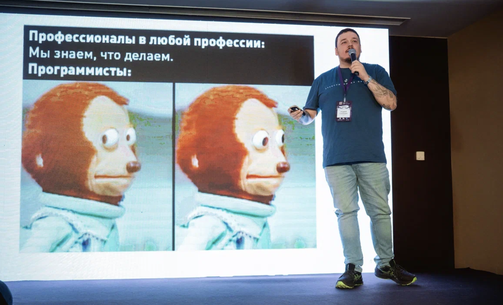

А поговорить?

Это консалтинг для своих. Да даже и не консалтинг, по сути :) Все эти сложные слова оставим балаболам с псевдоумными презентациями. Просто поговорить. Итак:
- Вы давно уже в it и видели самые сумрачные места, молодняк с хабра вызывает в лучшем случае кривую усмешку
- Или наоборот: вы хотите поменять трек с инженерного на менеджерский или аналитический, думаете про свою нишу и в целом про самоопределение
- Жена не понимает, семья не понимает. они не в теме, да и не хочется им навешивать свои проблемы и растить итак уже вымахавшую тревожность
- Хочется поныть, а ныть нельзя. Ну как же, блять, вокруг все успешные молодцы, а ты тут такой нытик
- Психотерапевты не понимают проблемы сломанных деплоев, кривого кода, менеджеров-импотентов и сгоревшей команды. в лучшем случае черканут про выгорание и выдадут результат из первых трех ссылок в гугле по этом вопросу
- Рынок найма рушится, ии отбирает работу, собеседования превратились в "заход в хату", да и просто страшно, в конце концов. не нужны вам всякие карьерные, прости господи, консультации, вам хочется просто поговорить с нормальным человеком и обстучать об него свою ситуацию
- В России жопа, в Европе жопа, в США жопа, а может и не жопа, но как попасть туда вообще непонятно. что делать-то? сидеть на своей уже жопе ровно просто неуютно
- Устали от конференций, которые превратились в ярмарку тщеславия где не с кем поговорить. все только хвалятся успешным успехом, а на неприятные вопросы прикрываются своими нда
- Мучают мысли про свой бизнес, но страшно, непонятно и вообще, надо все это с кем-то адекватным обсудить и не со снобом в пиджачке за охулиард денег, который опять будет выдавать дефолтные фразочки-оладушки, которые одинаково крутятся во все стороны
Почему я? Потому что я проходил через все это и не раз. Я поработал в крупных и маленьких компаниях по всему миру и знаю как все происходит. не в плане кода, а в плане жизни и культуры. я искал инвесторов, запускал стартапы, продавал стартапы, прошел и бигтехи и подвальные агенства на три с половиной человека
Я хорошо понимаю бизнес не только со стороны наемного сотрудника, но и со стороны предпринимателя и знаю, какие там темные стороны и углы. я не буду вам давать советы по бизнес-моделям и как выдоить венчур, просто поговорим о том, что страшно
Я много раз уставал и сдавался. А потом вставал на ноги и шел дальше. Я терял все и был в адских минусах, но потом нашел в себе силы вылезти и все равно продолжать. Я не буду вас учить как это сделать, я просто знаю, какое общение нужно в таких ситуациях
Я весь перед вами :) На моем канале больше двух тысяч постов и можно в деталях узнать, что я за человек и какой я профессионал. И теперь со мной можно просто поговорить один на один. без записи, без "какую пользу вы вынесете", мы все взрослые люди и сами все знаем про свою пользу. я предлагаю честный разговор без продажи себя, без маркетинговой воды и вот этой прочей херни. просто поговорим как два взрослых человека, уставших от неопределенности
Что по условиям?
Поговорим час минимум, а дальше как пойдет. Я не психотерапевт, который косится на часы через 50 минут беседы, пока вы пытаетесь открыть перед ним душу. никакого осуждения, никаких "а вот у меня", поговорим о вас и том, что беспокоит лично вас
Вы платите только в том случае, если почувствовали, что было полезно. Если считаете, что херня — просто расходимся и вы можете ничего не платить. я не 100 долларов, чтобы всем нравиться и это правда. Я готов брать деньги только в том случае, если у нас случился мэтч и я оказался полезен
поговорить можем онлайн или оффлайн в Москве. Встретимся за обедом/чаем/кальяном/просто пройдемся по парку
Пишите на почту andrey@sinits.in с пометкой «Запрос на поговорить» и договоримся
А если ну вообще нет денег, то можно просто написать мне письмо с любым вопросом. Отвечу в канале, чтобы было полезно всем. Анонимно, конфиденциально и по делу